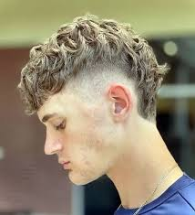
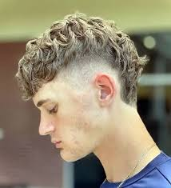
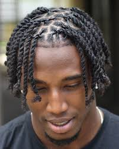
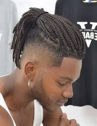
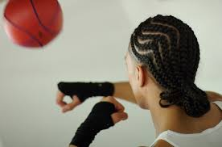
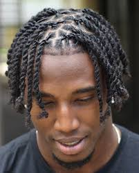
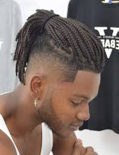
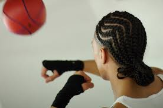

Apresentando: Barbearia Daniel - O Destino Definitivo para Estilo e Cuidados Masculinos
Se você está em busca de um local onde a tradição se encontra com a modernidade, onde o estilo é aprimorado com maestria e onde a excelência é o padrão, então você está prestes a descobrir a Barbearia Daniel. Localizada estrategicamente no coração da cidade, somos mais do que apenas uma barbearia - somos um destino para homens que buscam mais do que apenas um corte de cabelo, mas uma experiência de transformação completa.
O Que Nos Distingue:
Experiência:
Com anos de experiência combinada, nossa equipe de talentosos barbeiros e estilistas está aqui para superar suas expectativas e elevar seu estilo a novas alturas. Inovação: Mantendo-se atualizados com as últimas tendências e técnicas, oferecemos uma ampla gama de serviços que vão desde cortes clássicos até os estilos mais modernos e arrojados. Atenção Personalizada: Cada cliente é único, e tratamos cada visita como uma oportunidade de criar uma experiência personalizada que atenda às suas necessidades e desejos individuais. O Que Oferecemos:
Cortes de Cabelo:
Dos cortes mais tradicionais aos mais contemporâneos, nossos barbeiros são especialistas em criar looks que combinam com sua personalidade e estilo de vida. Tratamentos de Barba: De um simples aparar a tratamentos de luxo, nossa equipe está aqui para garantir que sua barba esteja sempre impecável e bem cuidada. Serviços Complementares: Além de cortes e tratamentos de barba, oferecemos uma variedade de serviços adicionais, incluindo tratamentos capilares, coloração, e muito mais. Por Que Escolher a Barbearia Daniel:
Ambiente Acolhedor:
Nossa barbearia é um lugar onde você pode relaxar, descontrair e desfrutar de uma experiência de cuidados masculinos de alta qualidade. Compromisso com a Excelência: Estamos comprometidos em fornecer serviços excepcionais que excedam as expectativas de nossos clientes em cada visita. Higiene e Segurança: Sua saúde e segurança são nossas prioridades. Mantemos os mais altos padrões de higiene e seguimos rigorosamente os protocolos de segurança. Venha nos visitar na Barbearia Daniel e descubra por que somos o destino preferido para homens que valorizam estilo, qualidade e excelência em cuidados masculinos. Estamos ansiosos para recebê-lo e ajudá-lo a alcançar seu melhor visual.

 

 




